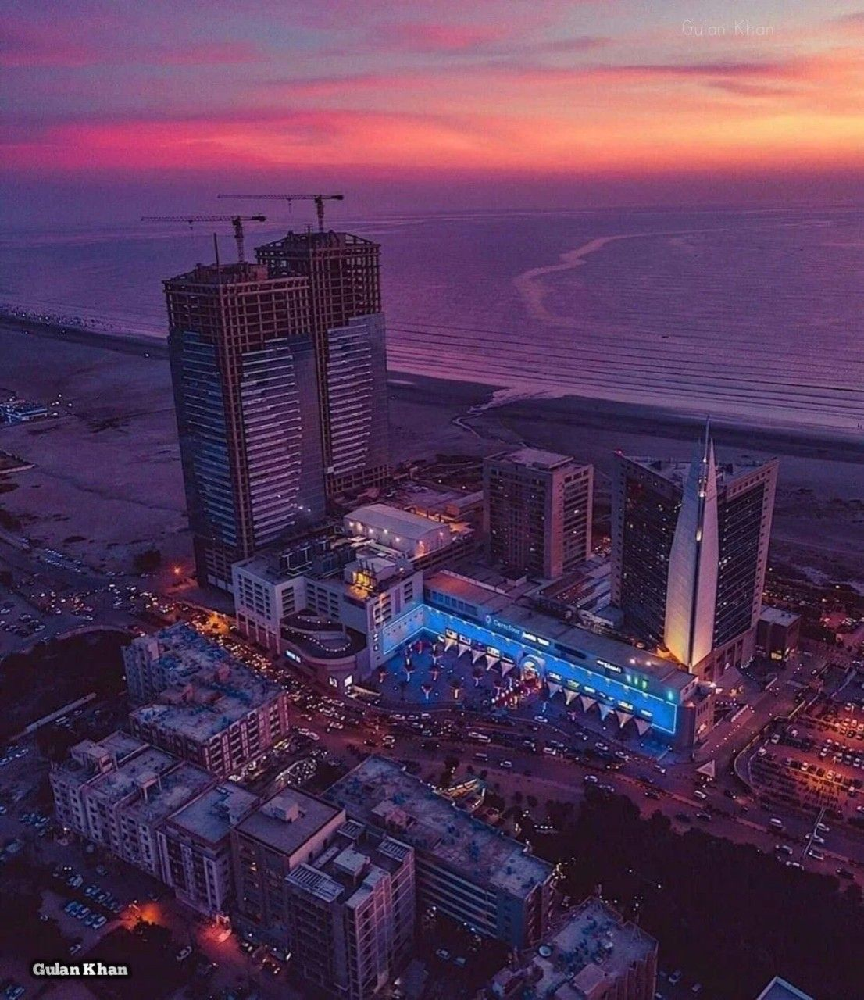

KEY FACTS ABOUT KARACHI
-
Karachi is the largest city of Pakistan.
-
It is the economic and financial hub of the country.
-
Located on the Arabian Sea coast.
-
It was once the capital of Pakistan until 1959.
-
The city has a diverse population with people from all parts of Pakistan.
-
Karachi is home to Pakistan’s busiest seaport and airport.
-
Known for its educational institutions, including Karachi University and NED.
-
Famous places include Clifton Beach, Quaid-e-Azam’s Mausoleum, and Port Grand.
-
The city faces issues like traffic, pollution, and overpopulation.
-
Despite challenges, it remains Pakistan’s center for trade, culture, and industry.